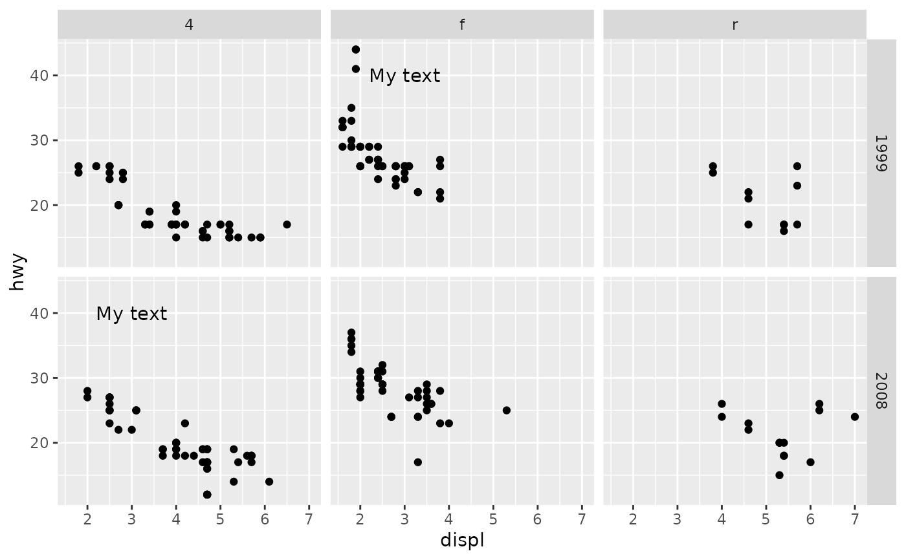
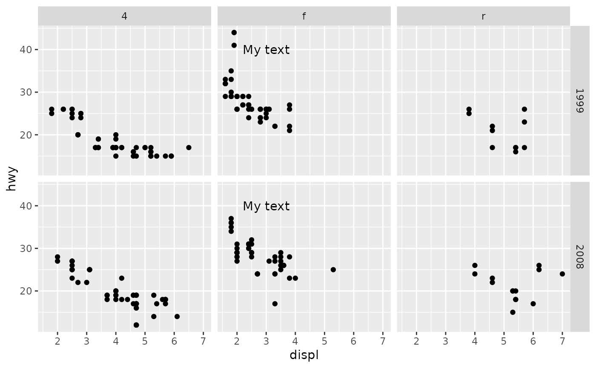
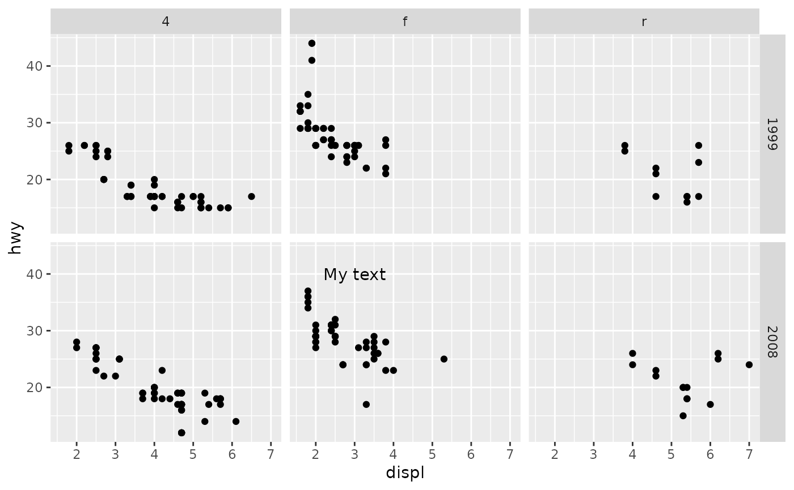

This function limits the panels in which a layer is displayed. It can be used to make panel-specific annotations.
Arguments
- layer
A
layeras returned bylayer(). Alternatively, a bare list of layers.- expr
An
expressionthat, when evaluated in the facet's layout data.frame, yields alogicalvector parallel to the rows.
Details
The expr argument's expression will be evaluated in the context of the
plot's layout. This is an internal data.frame structure that isn't
ordinarily exposed to users, so it will require some extra knowledge. For
most facets, the layout describes the panels with one panel per row. It
typically has COL, ROW and PANEL columns that keep track of where a
panel goes in a grid-layout of cells. In addition, the layout contains the
facetting variables provided to the facets or rows and cols arguments
of the facets. For example, if we have a plot facetted on the var variable
with the levels A, B and C, as 1 row and 3 columns, we might target
the second B panel iwth any of these expressions: var == "B",
PANEL == 2 or COL == 2. We can inspect the layout structure by using
ggplot_build(p)$layout$layout, wherein p is a plot.
Examples
p <- ggplot(mpg, aes(displ, hwy)) +
geom_point() +
facet_grid(year ~ drv)
anno <- annotate("text", x = 3, y = 40, label = "My text")
# Target specific panels
p + at_panel(anno, PANEL %in% c(2, 4))

# Target a variable
p + at_panel(anno, drv == "f")

# Or combine variable with position
p + at_panel(anno, drv == "f" & ROW == 2)
